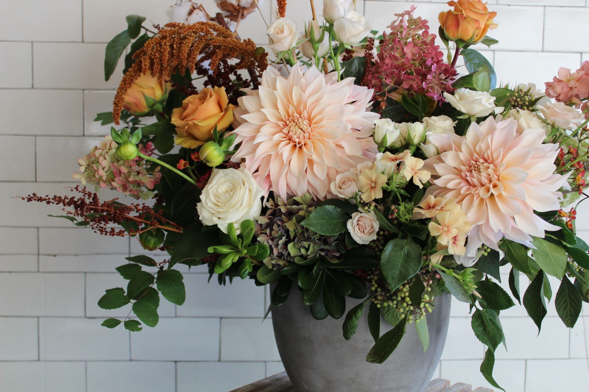

A collection of my floral designs @ Celsia Floral.
Becoming a floral designer was sort of the first concrete step of re-exploring the design world, and remembering how much I enjoyed creating things in different challenges.
My floral days consist of smelling the roses, admiring bits of nature, and always being on the look out for the best pieces to forage (sometimes known as weeds growing among blackberry bushes)



As always, a huge thank you to Joh and Eriko Semitsu ♡ for supporting me along this creative, flower-filled journey